2026 졸업평가 이후 학생 여론
졸업평가 결과 이후 이틀 동안 평가 · 수상에 대한 불만 글이 이어졌고, 새벽 사이 특정 팀을 향한 비난으로 번졌다가 저녁부터는 학과의 공식 답변 요구로 바뀌고 있습니다.
11.05 20:49 글 · "디미디 학생회장님은 학생들 의견을 학과에 전달해 주시고 학과에서도 답변 일정과 방식을 안내해 주셨으면" (공감 9)
| 쟁점 | 학생들 주장 | 학과 판단이 필요한 것 |
|---|---|---|
| 평가 점수 · 기준 비공개 | 무엇이 잘됐고 부족했는지 알아야 발전할 수 있음 · 최소한 본인 팀 점수와 수상자 선정 방식은 공개해 달라 | 평가표 · 점수 공개 범위 · 개별 피드백 |
| 수상 방식 | 오프닝 때 PT상 · 우수작 중복 수상 가능이라 했는데 겹치는 팀이 없음 · 거의 모든 팀이 상을 받아 "나눠주기" 같다 · 대본을 보고 읽은 팀이 PT상 | 수상 기준 · 결정 과정 설명 |
| 특정 팀 비난 | 최우수팀 로고가 핀터레스트 이미지와 유사하다는 표절 의혹 · 개인작 복붙 주장 · 교수님 편애 의혹 · 수상 반납 · 해명 요구 | 학과 차원 확인 여부 · 해당 팀 보호 |
| 심사 운영 | 최우수 · 우수 선정이 PT까지인지 · 외부 심사위원 점수와 기준 · 교수님 평가 반영 여부 · 공간 분배 공정성 | 심사 구조 설명 범위 |
표절 의혹 대상 팀(패럴랙스)은 다음 장에서 로고를 비교합니다. 첨부 캡처의 팀 이니셜은 가렸습니다.
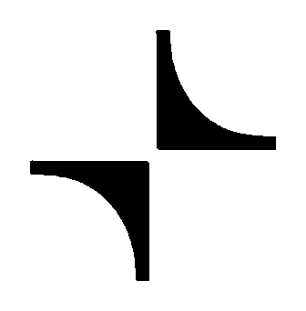
① 의혹 제기 로고@mais__arquitetura 프로필 이미지
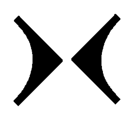
② ①을 45° 회전비교를 위해 학회에서 회전만 적용
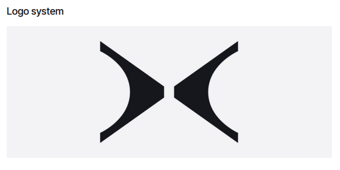
③ 패럴랙스 팀 로고팀 Logo system 자료
검정 단색 · 오목한 곡선 바깥선과 중심을 향한 꼭짓점을 가진 두 조각이 가운데 틈을 두고 대칭으로 마주 봄 · 게시글 "각도만 돌린 수준" (11.05 01:06)
① 원본은 대각선 배치(점대칭), ③은 좌우 배치(거울 대칭) · ③은 꼭짓점 끝을 잘랐고 가로 비율이 더 넓음
로고 제작 과정 자료(스케치 · 시안 · 레퍼런스) · 원본을 참고했는지 여부 · 학과 판단 전에 해당 팀 설명 듣기
출처 · instagram.com/mais__arquitetura (브라질 건축사무소 MAIS ARQUITETURA 계정 · 11.05 캡처). 학생 단톡방 공지에는 팀명과 로고를 공개하지 않았습니다.
"우리팀 어디가 부족했고 어떻게 평가했는지가 궁금함" (공감 6) · "누구 끌어내리고 말고가 아니라 우리팀의 피드백을 듣고 싶다"
"수상 결과를 무작정 부정하려는 건 아니고, 최소한 본인이 받은 점수와 수상자 선정 방식 정도는 공개해 주셨으면" (11.05 18:09 · 공감 12)
"실제 평가표와 공식적인 설명을 바랍니다" (11.05 20:49 · 공감 9)
"예년보다 완성도 높고 멋진 작품이 정말 많다고 생각합니다."
"특정 팀에 대한 비난글은 자제해 주시기를 부탁드립니다."
"학회장으로서 이번 상황을 학과장님께 보고드리고, 평가표 공개나 개별 피드백이 가능한지 확인한 뒤 결과를 다시 안내드리겠습니다."
"익명 커뮤니티에서의 비난보다는 학회나 졸업준비위원회로 직접 의견을 전달해 주시고 …"
공지 중 주요 문장 · 전문은 카톡으로 함께 전달
| # | 확인 요청 | 선택지 |
|---|---|---|
| 1 | 평가표 · 점수 공개 | 전체 공개본인 팀 것만 공개비공개 유지 |
| 2 | 개별 피드백 | 서면 피드백교수님 면담진행하지 않음 |
| 3 | 수상 기준 · 중복 수상 설명 | 학과 공지로 설명학회를 통해 전달설명하지 않음 |
| 4 | 특정 팀 의혹 대응 | 학과에서 확인 진행해당 팀과 면담추가 대응 없음 |
| 5 | 학생 안내 방식 · 시점 | 학과 명의 공지학회 명의 전달 안내 시점 · 11. __ (학생들이 답변 일정을 먼저 요청한 상태) |
말씀해 주신 범위 안에서만 학생들에게 전달하겠습니다. 학과에서 정하기 전에는 학회가 공개 여부를 먼저 약속하지 않겠습니다.
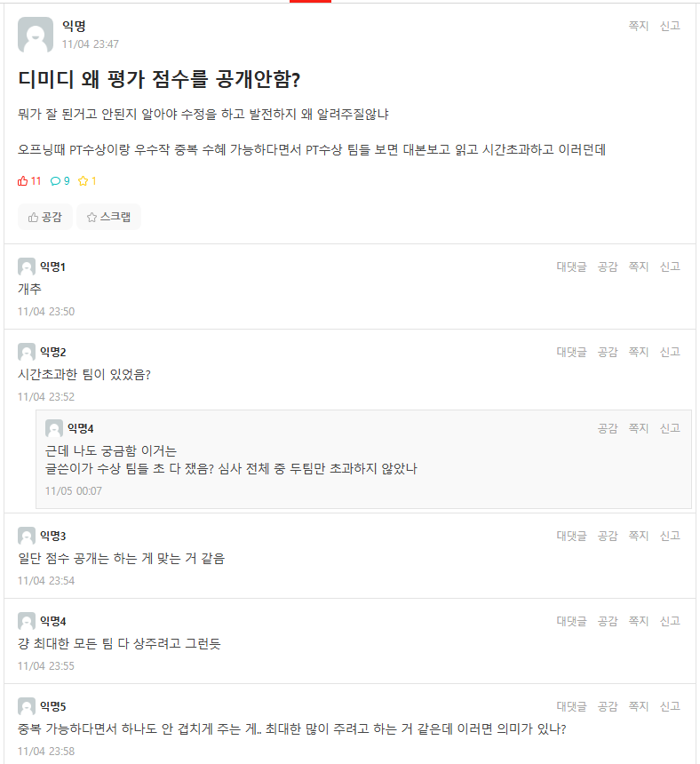
11.04 23:47점수 공개 요구 · 중복 수상 공지와 결과가 다르다는 주장 · 공감 11
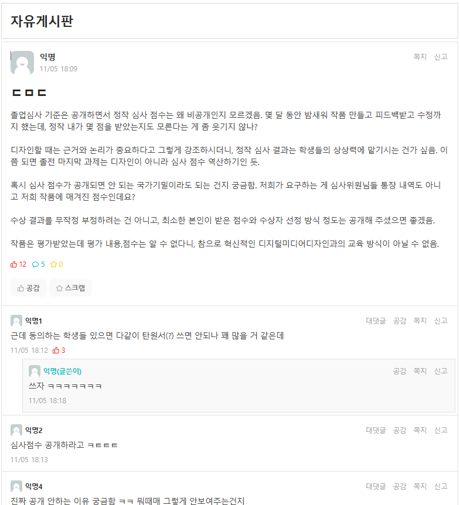
11.05 18:09본인 점수 · 수상자 선정 방식 공개 요구 · 탄원서 제안 · 공감 12
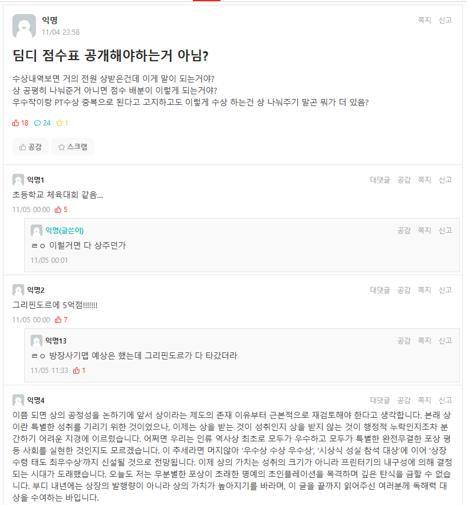
11.04 23:58"거의 전원 상 받음" · 상 나눠주기 주장 · 공감 18 (최다)
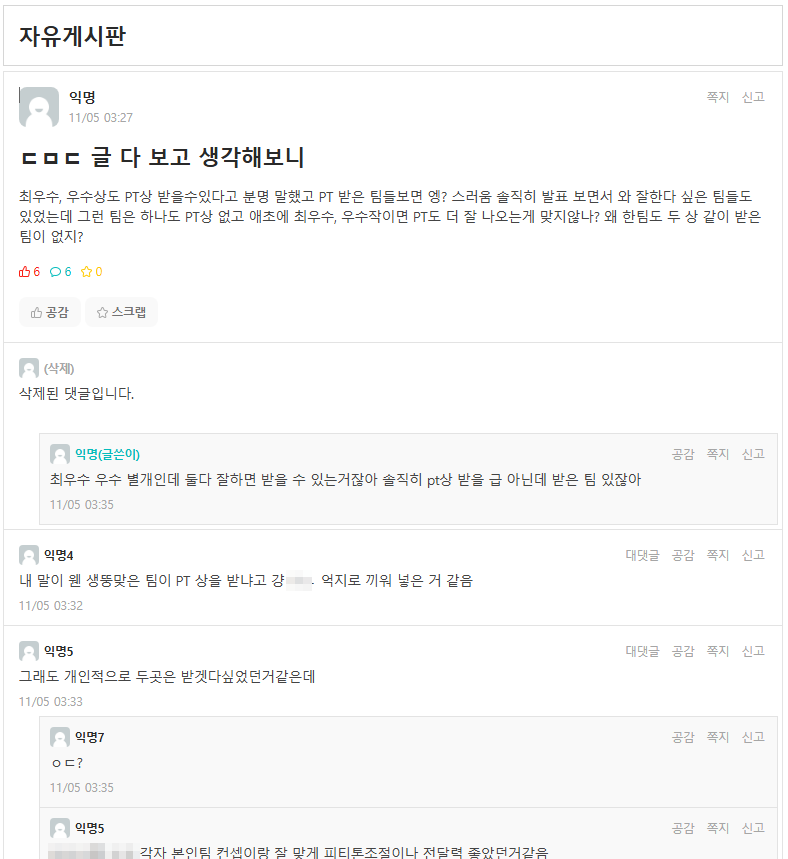
11.05 03:27중복 수상 가능 공지 · PT상 선정에 대한 의문 · 공감 6
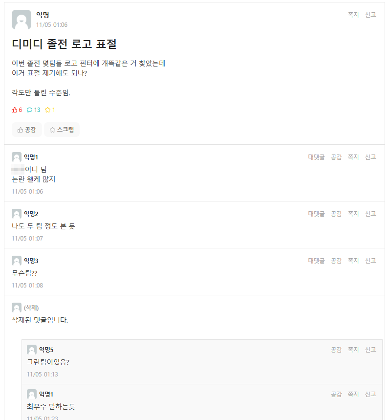
11.05 01:06졸전 로고 표절 의혹 첫 제기 · 공감 6
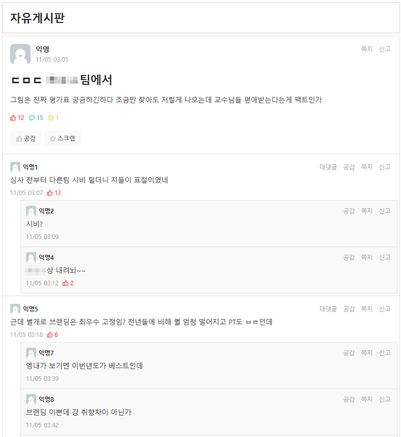
11.05 03:05팀 이니셜 지목 · 편애 의혹 · 수상 반납 요구 댓글 · 공감 12
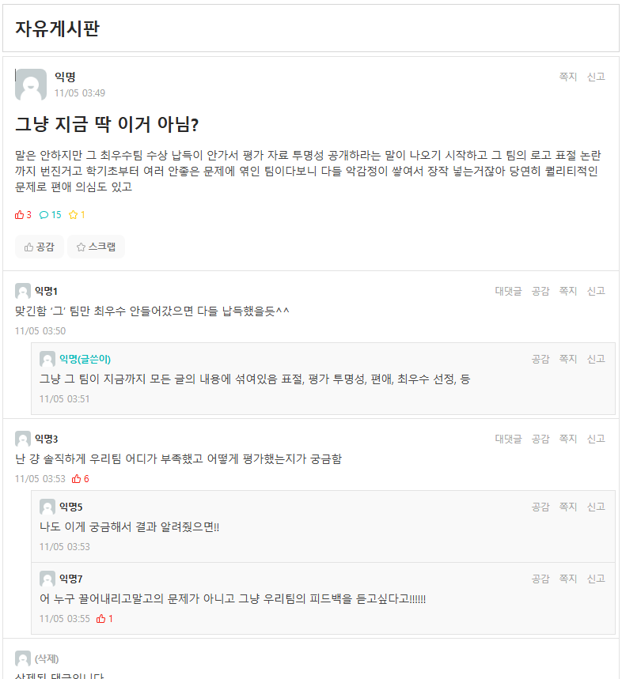
11.05 03:49특정 팀이 모든 논란에 섞였다는 분석 · 댓글은 피드백 요구
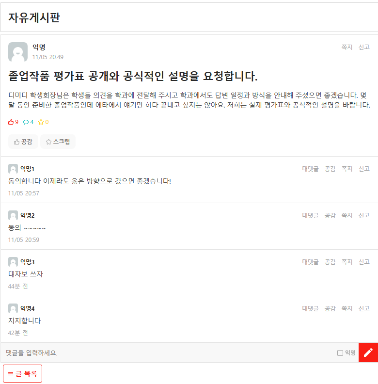
11.05 20:49학생회장 통한 학과 전달 · 평가표 · 공식 설명 요청 · 공감 9
| 시각 | 제목 · 요지 | 공감/댓글 | 분류 |
|---|---|---|---|
| 11.04 16:18 | 졸작 평가점수는 비공개임? · PT상 기준 | 11 / 31 | 수상 |
| 11.04 23:47 | 왜 평가 점수를 공개 안 함? | 11 / 9 | 점수 |
| 11.04 23:58 | 점수표 공개해야 하는 거 아님? | 18 / 24 | 수상 |
| 11.05 01:06 | 졸전 로고 표절 | 6 / 13 | 특정 팀 |
| 11.05 02:10 | 중복 없이 상 뿌리기가 불만인지 | 0 / 9 | 수상 |
| 11.05 03:05 | 심사고 뭐고 · 개인작 복붙 주장 | 0 / 0 | 특정 팀 |
| 11.05 03:05 | (팀 이니셜) 팀에서 · 편애 의혹 | 12 / 15 | 특정 팀 |
| 11.05 03:27 | 글 다 보고 생각해 보니 · PT상 | 6 / 6 | 수상 |
| 11.05 03:35 | 서로 비난보다 납득할 방향으로 | 11 / 2 | 자제 |
| 11.05 03:43 | 물타기식 다른 팀 평가 자제 | 5 / 8 | 자제 |
| 시각 | 제목 · 요지 | 공감/댓글 | 분류 |
|---|---|---|---|
| 11.05 03:49 | 그냥 지금 딱 이거 아님? | 3 / 15 | 특정 팀 |
| 11.05 03:58 | 이래도 점수표 공개 안 해? | 0 / 1 | 점수 |
| 11.05 04:03 | 여론 보고 … '그' 팀이면 개추 | 6 / 6 | 특정 팀 |
| 11.05 04:20 | '그' 팀 이 사태 해결 방안 | 1 / 2 | 특정 팀 |
| 11.05 04:32 | 졸심 투명하게 운영했어야 | 7 / 13 | 운영 |
| 11.05 04:37 | 에타는 교수들 못 보지 않아? | 5 / 7 | 확산 |
| 11.05 18:09 | 심사 점수 비공개 비판 · 탄원서 | 12 / 5 | 점수 |
| 11.05 18:29 | 묻힐 일이 아니라고 본다 | 8 / 8 | 점수 |
| 11.05 20:49 | 평가표 공개와 공식 설명 요청 | 9 / 4 | 점수 |
감사합니다
2026 디지털미디어디자인과 학회 · 졸업준비위원회